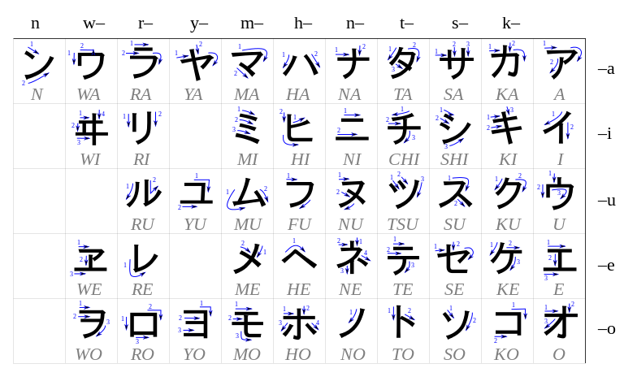

Les kanas (仮名) sont des caractères de l’écriture japonaise qui notent chacun une more (unité de rythme différente de la syllabe). Ils ne sont donc pas similaires aux lettres de l’alphabet latin qui, elles, notent théoriquement des phonèmes. Les kanas s’utilisent conjointement aux kanjis (les caractères d'origine chinoise). Ils permettent de noter phonétiquement la langue, ce qui n’est pas possible avec les kanjis.
Il existe deux types principaux de kana en japonais moderne :
Les kanas peuvent être utilisés pour aider à la lecture de kanji : on les appelle alors furigana.
